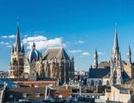
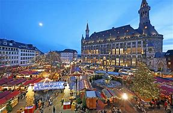
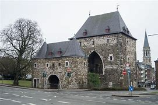
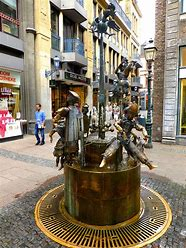
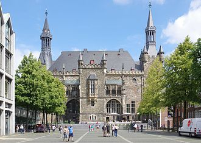
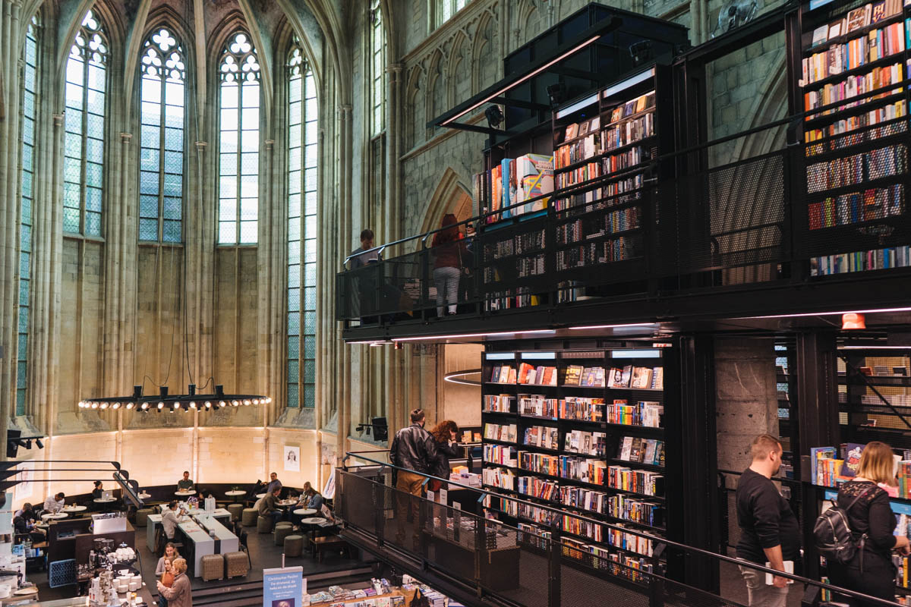
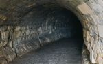
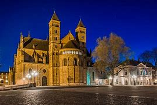

| Name |
Bild |
Beschreibung |
Link |
| Achner Dom |
Der Aachener Dom, auch Hoher Dom zu Aachen, Aachener Münster oder Aachener Marienkirche, ist die Bischofskirche des Bistums Aachen und das bedeutendste Wahrzeichen der Stadt Aachen. Der Dom besteht aus mehreren Teilbauten, deren jeweilige Entstehungszeiten die Epoche des Frühmittelalters bis hin zur späten Neuzeit umfassen. |
 |
Link |
| Aachner Markt |
Zweimal pro Woche findet der zentral gelegene Wochenmarkt vor der schönsten Kulisse Aachens statt.
Neben frischen Lebensmitteln wie Obst, Gemüse, Kräuter, Milchprodukte, Fisch, Fleisch und Eier werden auf dem Wochenmarkt auch die schönsten Blumen aus der Region angeboten. Der Wochenmarkt ist nicht nur ein Treffpunkt für Bewohner der Umgebung, sondern auch ein Touristenmagnet. |
 |
Link |
| Aachner Ponttor |
Das Ponttor in Aachen, zeitweise (17./18. Jahrhundert) auch Brückenpforte oder -thor genannt, ist das westliche der beiden Nordtore der ehemaligen äußeren Aachener Stadtmauer. Neben dem Marschiertor im Süden ist das Ponttor eines der beiden heute noch erhaltenen der ehemals elf Stadttore der damaligen freien Reichsstadt Aachen. |
 |
Link |
| Aachner Puppenbrunnen |
In der Krämerstrasse, kurz vor dem Dom findet man den Puppenbrunnen.
Dieses Kunstwerk von Bonifatius Stirnberg aus dem Jahre 1975 ist ein aus Bronze gestalteter Brunnen, mit unterschiedlichen, und zur Freude vieler Kinder, beweglichen Figuren, die Typisches aus Aachen darstellen sollen. |
 |
Link |
| Aachner Rahthaus |
In den Jahren 1943/44 wurde das Rathaus durch Bombenangriffe schwer beschädigt. 1944, aber vor allem ab 1946 wurden zunächst die Sicherung und dann der Wiederaufbau vorangetrieben. Schon 1950 konnte im provisorisch wiederhergestellten Krönungssaal der erste Internationale Karlspreis verliehen werden. Ein Jahr später kehrten Rat und Oberbürgermeister an ihren historischen Ort zurück. |
 |
Link |
| Aachner Schatzkammer des Kaiserdoms |
Die Aachener Domschatzkammer birgt den bedeutendsten und umfangreichsten Kirchenschatz nördlich der Alpen. Die Schatzstücke sind in ihrer Bedeutung eng verknüpft mit ihrem eigentlichen Zweck: der Ausstattung der durch Karl den Großen um 800 gegründeten Marienkirche und der Feier ihrer Liturgie. |
 |
Link |
| Archéoforum in Lüttich |
Reise durch 9000 Jahre Geschichte
Der Besuch dieser sowohl durch die Größe wie auch durch den Wert beeindruckenden Stätte und zahlreicher Veranstaltungen lassen Sie die Wurzeln der leidenschaftlichen Stadt entdecken.
Der Besuch ermöglicht Ihnen eine zwanglose Entdeckung der Stätte - mit einem interaktiven IPAD-Tablet, das Ihnen einen individuellen Besuchsplan und einen Familienbesuchsplan mit Spielen und Aktivitäten für kleine Kinder bietet. Sie können dieses Tablet jederzeit einfach an die nächste Person weiterreichen.
Eingang hinter der Bushaltestelle am Eingang des Tunnels. |
 |
Link |
| Coteaux de la Citadelle |
Die Coteaux de la Citadelle sind ein ländlicher Raum von mehr als 90 Hektar, teilweise im historischen Zentrum von Lüttich,von denen fast die Hälfte zum Naturerbe der Wallonischen Regionerklärt ist. Das Gebiet verfügt über mehr als 60 Denkmäler, die von der Wallonischen Region zum materiellen Erbe erklärt wurden, und umfasst 13 Kilometer Wanderwege. |
 |
Link |
| Gare de Liege-Guillemins |
Der Bahnhof Liège-Guillemins ist der wichtigste Bahnhof der in der belgischen Region Wallonien gelegenen Stadt Lüttich. Der nach durchgreifendem Um- und Neubau im September 2009 in seiner heutigen Gestalt in Betrieb genommene Bahnhof befindet sich etwas außerhalb der Innenstadt, im Stadtteil Guillemins. Er ist Halt von Thalys- und ICE-Zügen und damit ein Knotenpunkt im europäischen Hochgeschwindigkeitsnetz. |
 |
Link |
| La Cite Miroir |
Die „Cité Miroir“ ist ein Ausstellungs- und Veranstaltungsort und Kulturbegegnungsraum im ehemaligen Schwimmbad „Sauvenière“ in Lüttich. Die ehemaligen Bäder und Thermen der Sauvenière sind 2014 umbenannt worden in „Cité Miroir“ – Spiegelstadt. Ein Bildungs-, Austausch- und Bürgerstandort, ein Ort des Dialogs zwischen den Kulturen, ein Ort um Erinnerungen aufzuarbeiten. |
 |
Link |
| St. Pauls Kathedrale Lütticher Dom |
Die Kathedrale von Lüttich , sonst St. Pauls Kathedrale, Lüttich , in Lüttich , Belgien, ist Teil des religiösen Erbes von Lüttich. Im 10. Jahrhundert gegründet, wurde es vom 13. bis zum 15. Jahrhundert umgebaut und Mitte des 19. Jahrhunderts restauriert. Durch die Zerstörung der Kathedrale Saint-Lambert im Jahr 1795 wurde sie im 19. Jahrhundert zu einer römisch-katholischen Kathedrale . Sie ist Sitz der Diözese Lüttich . |
 |
Link |
| Montagne de Bueren |
Mit 374 Treppen und einer Steigung von 30 % gehört die Montagne de Bueren zu den zehn außergewöhnlichsten Treppen der Welt. Sie ist ein Highlight der Stadt Lüttich und zu jeder Stunde zugänglich. Als Beispiel für die Kunst der Durchbrüche im 19. Jh. ermöglichte die Montagne de Bueren die direkte Verbindung der Kaserne der Zitadelle zum Stadtzentrum. |
 |
Link |
| Dominikanerkirche Maastricht |
Dominicanen in der ehemaligen Dominikanerkirche ist eine der schönsten Buchhandlungen der Welt. Dieser Meinung ist man nicht nur beim Entre Deux, sondern auch bei einer führenden amerikanischen Kulturwebsite. Jedes Jahr erstellen die Amerikaner eine Top 20-Liste der schönsten Buchhandlungen; die Maastrichter Buchhandlung Dominicanen gehört jedes Mal zu den Spitzenreitern. Mehr als zu Recht! Verlockend ist keineswegs nur das 700 Jahre alte Gebäude der Buchhandlung |
 |
Link |
| Maastricht Fort Sint Pieter |
Auf dem St. Pietersberg steht das Fort St. Pieter, das zu Beginn des 18. Jahrhunderts erbaut wurde. Ursprünglich hatte es eine militärische Funktion und die Maastrichter verteidigten sich hier gegen die Franzosen. Dies gelang ihnen auch über eine lange Zeit, aber letztendlich musste sich die Stadt doch ergeben. Heutzutage können Sie das Fort mit einem Führer besuchen und sich anschließend im Restaurant stärken. |
 |
Link |
| Maastricht Underground |
Eine Besonderheit von Maastricht oder sogar von ganz Limburg sind die unterirdischen Gänge. Es gibt mehrere Gelegenheiten das unterirdische Maastricht zu besuchen, wir haben eine Führung durch die nördlichen Grotten unter dem St. Pietersberg gemacht. Wenn man das Bedürfnis hat, mehr von unterirdischen Gängen zu erleben, kann man noch die Kasematten, die Zonneberg-Grotten oder die Tunnel unter dem Fort Sint Pieter bewandern. Das sind nur kleine Abschnitte des unterirdischen Labyrinths von Tunneln und Grotten, denn ganz Limburg ist von fast 200 Kilometern unterirdischer Gänge durchzogen. |
 |
Link |
| Kruisherenhotel Maastricht |
Das 5-Sterne klassifizierte Kruisherenhotel Maastricht liegt im ehemaligen Kruisherenkloster des 15. Jahrhunderts im Zentrum von Maastricht. Zusammen mit der monumentalen gotischen Kirche wurde dieser Gebäudekomplex in ein Designhotel verwandelt. Die Einrichtung ist eine Schöpfung des international renommierten Innenarchitekten Henk Vos in Zusammenarbeit mit internationalen Designern wie Philip Starck, Le Corbusier und Ingo Maurer. |
 |
Link |
| Limburger Vlaai essen |
Ein typisches Gericht für die Region Limburg ist Vlaai. Der flache Kuchen aus Hefeteig wird mit Fruchtkompott gefüllt und mit einem Gitter aus Teig bedeckt. Den besten Vlaai in Maastricht bekommt ihr in der Bäckerei mit angrenzendem Café an der Bisschopsmolen. Hier kommt ihr nicht nur in den Genuss von verschiedenen Vlaai Sorten, sondern könnt euch auch die alte Wassermühle anschauen, welche bis heute zur Herstellung von Dinkelmehl genutzt wird. Ein leckeres Stück Tradition in Maastricht |
 |
Link |
| Maastricht Vrijthof |
Het Vrijthof ist ein wunderschöner Platz im Herzen der Altstadt von Maastricht, der mit alten Pflastersteinen gedeckt und von Bäumen umgeben ist. Um den Platz herum liegen viele schöne Restaurants und Cafés. Direkt neben dem Vrijthof steht die Basilika des heiligen Servatius, eine romanische Kathedrale mit Krypten und Schätzen. |
 |
Link |